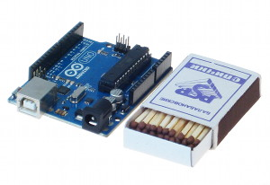

Что такое Arduino: первые шаги в электронике
Что можно сделать на Ардуино и зачем это нужно? Разбираемся с популярной и дружелюбной платформой, которая позволяет быстро создавать умные электронные устройства своими руками.
Самодостаточная начинка
Arduino — это небольшая управляющая плата с собственным процессором и памятью. Помимо них на плате есть пара десятков контактов, к которым можно подключать всевозможные компоненты: светодиоды, датчики, моторы, чайники, роутеры, магнитные дверные замки и вообще всё, что работает от электричества.
В процессор Ардуино можно загрузить программу, которая будет управлять всеми этими устройствами по заданному алгоритму. Таким образом можно создать бесконечное количество уникальных классных гаджетов, сделанных своими руками и по собственной задумке.
Простота и доступность
Платформа Arduino приобрела бешеную популярность благодаря простоте и дружелюбности. Даже полный ноль в программировании и схемотехнике может освоить основы работы с Ардуино за пару часов. Этому способствуют тысячи публикаций, учебников, заметок в интернете и отличная серия видеоуроков по Arduino на русском языке.
Программы для Ардуино пишутся на обычном C++, дополненным простыми и понятными функциями для управления вводом-выводом на контактах. Если вы уже знаете C++, Arduino станет дверью в новый мир, где программы не ограничены рамками компьютера, а взаимодействуют с окружающим миром и влияют на него. Если же вы новичок в программировании — не проблема, вы с лёгкостью научитесь, это просто.
Для удобной работы с платами Ардуино существует бесплатная официальная среда программирования Arduino IDE, работающая под Windows, Mac OS и Linux. С помощью неё загрузка новой программы в контроллер становится делом одного клика, только лишь подключите плату к компьютеру через USB. Хотя для более пытливых умов возможна работа и через Visual Studio, Eclipse, другие IDE или командную строку, а новичкам подойдёт визуальная среда программирования XOD IDE.
Вам не понадобится паяльник. Полноценные устройства можно собирать, используя специальную макетную доску, перемычки и провода абсолютно без пайки. Прототипирование ещё не было таким быстрым и простым, поэтому ардуинки быстро прижились в школах и кружках робототехники.
Принцип бутерброда
Ещё одной отличительной особенностью Arduino является наличие плат расширения под названием Shield. Эти «шилды» ставятся поверх ардуинки подобно слоям бутерброда и дают ей новые дополнительные возможности. Например, существуют платы расширения для подключения к локальной сети и интернету (Ethernet Shield), для управления мощными моторами (Motor Shield), для получения координат и времени со спутников GPS (приёмник GPS/ГЛОНАСС) и многие другие.
В итоге
Arduino — это сердце конструктора, в котором нет конечного, строго определённого набора деталей, и нет ограничений в разнообразии того, что вы можете из него собрать. Всё ограничено лишь вашей фантазией. Это новый мир, убойное хобби и отличный подарок. Свыше 10 миллионов людей в мире уже поняли это.